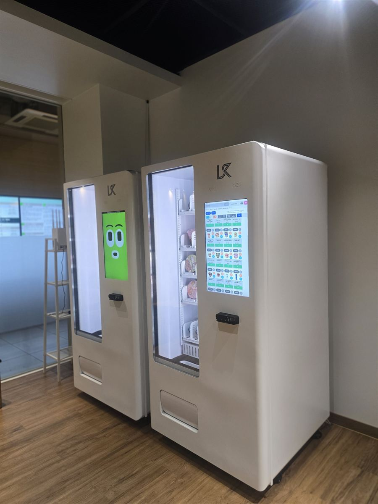

아산 무인자판기 설치 완료 — 공유오피스 라운지 간편식·음료 자판기 2대

공유오피스는 입주사는 여럿인데 공용 공간을 책임지는 사람은 애매한 구조입니다. 라운지에 간식을 채워 두면 누가 얼마나 가져갔는지 알 수 없고, 운영사가 비용을 떠안으면 입주사가 늘수록 부담이 커집니다. 위 사진은 그 공용 공간을 각자 계산하는 자리로 바꾼 현장입니다. 라운지 벽면을 따라 자판기 두 대를 나란히 세웠습니다.
어떻게 구성했나
한 대에 다 넣을 수도 있었지만 일부러 두 대로 나눴습니다. 사진에서 오른쪽 기계는 컵라면·즉석식 같은 간편식이 들어간 쪽입니다. 선반 칸이 깊고 턱이 있어 둥근 용기가 굴러 떨어지지 않게 잡아 줍니다. 왼쪽은 음료를 담당합니다. 품목 성격이 다른 물건을 한 대에 섞으면 칸 규격이 애매해져서, 결국 어느 한쪽이 자주 걸립니다.
나눠 두면 점심시간에 줄이 갈라지는 이점도 있습니다. 공유오피스는 12시 전후와 야근이 시작되는 7시쯤 수요가 몰리는데, 기계가 하나면 그 앞에서 사람이 밀립니다. 두 대로 서면 밥 사는 사람과 음료만 뽑는 사람이 섞이지 않습니다. 두 기계 모두 화면에서 품목을 고르고 결제까지 끝내는 방식이라, 어느 칸이 비었는지 유리문을 들여다보지 않아도 화면에 바로 표시됩니다.
앱으로 원격 관리, 설치는 반나절
공유오피스의 진짜 문제는 관리자가 상주하지 않는 시간입니다. 야간과 주말에 입주사 직원은 카드로 문을 열고 들어오는데, 그 시간엔 응대할 사람이 없습니다. 이 자판기는 칸별 남은 수량이 휴대폰 앱에 숫자로 뜨기 때문에, 운영자가 현장에 없어도 주말 사이 무엇이 비었는지 알 수 있고 월요일 오전에 한 번에 채우면 됩니다. 매출도 기계별·품목별로 나뉘어 쌓입니다.
결제는 카드와 간편결제만 받습니다. 사무실 건물에서 현금을 받으면 잔돈 보충과 수금 때문에 사람이 직접 들러야 하고, 야간에 현금이 든 기계가 서 있는 것 자체가 부담입니다. 설치에 필요한 건 220V 콘센트와 기계 폭만큼의 벽면, 그리고 재고를 채울 때 열 수 있는 앞쪽 여유 공간뿐입니다. 배송·수평 조정·상품 적재·시험 결제까지 반나절이면 끝나고, 두 대를 같이 넣어도 하루를 넘기지 않습니다.
구매·임대·렌탈 모두 가능
운영사가 직접 매입해 입주 혜택으로 돌리는 경우라면 구매가 총비용으로 유리합니다. 다만 공유오피스는 지점을 늘리거나 층을 옮기는 일이 잦은 업종이라, 자리를 확정하기 전에는 임대나 렌탈로 시작하시는 분들도 많습니다. 어느 쪽이든 설치비는 무료이고 세금계산서도 발행됩니다. 라운지 사진과 벽면의 가로·세로·높이 치수를 보내 주시면 몇 대가 들어가는지, 어떤 품목을 어느 기계에 넣을지 먼저 잡아 보내 드립니다.
아산 무인자판기 상담은 무료
온양온천역 일대 구도심과 온양동·권곡동, 시외버스터미널 쪽 모종동·용화동·실옥동, KTX 천안아산역이 있는 배방읍, 디스플레이 산업단지가 들어선 탕정면, 아산테크노밸리를 낀 음봉면·둔포면, 자동차 공장이 있는 인주면, 순천향대가 있는 신창면, 온천으로 알려진 도고면과 송악면·영인면·염치읍·선장면까지 아산 전역에 방문합니다. 아산은 산업단지 교대 근무지와 대학가, 온천 관광지가 한 시 안에 섞여 있어 같은 기계라도 자리에 따라 들어갈 품목이 크게 달라집니다. 공유오피스뿐 아니라 공장 휴게실, 기숙사 로비, 무인 스터디카페, 체육시설, 사무실 건물 1층처럼 사람은 머무는데 파는 사람이 없는 자리면 한 대로 시작할 수 있습니다. 현장을 보고 자리와 품목까지 같이 잡아 드리며, 상담과 견적은 무료입니다.
※ 사진은 H포스가 시공한 설치 사례이며, 글에 적힌 지역의 현장 사진은 아닙니다.
📞 아산 무인자판기 설치 상담 010-6832-1994